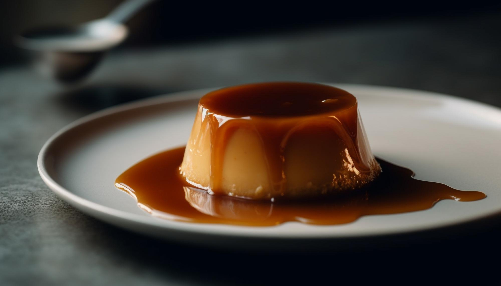

Creme Caramel Recipe

Description
Crème caramel,flan,caramel pudding,condensed milk pudding or caramel custard is a custard dessert with a layer of clear caramel sauce.
Ingredients
- 1.5 cups sugar
- 0.75 cup water
- 12 whole eggs
- 1.5 cups sugar or ¼ sugar and 2 ounces white chocolate
- 36 ounces whole milk
- 36 ounces heavy whipping crea
- 3 pinches salt
- 3 tablespoons pure Tahitian vanilla
Steps
- Preheat the oven to 275°F / 135°C.
- Spray four ramekins (6 to 8 ounces) with a very light coating of non-stick spray.
- Make the caramel:
- Mix the sugar and water in a glass bowl until the sugar has dissolved.
- Add to a saucepan, heat the sugar and water on medium to low heat.
- The sugar will start to turn a light golden brown (approximately 10 to 12 minutes, be careful, because it will burn very quickly).
- As soon as it turns a dark golden brown Mahogany color), turn off the heat immediately and CAREFULLY add about 2 tablespoons water to stop the cooking process.
- Pour into four individual custard cups.
- Tilt the cups to coat bottom thinly and evenly.
- Cool in the refrigerator for 30 minutes or in the freezer for 15 minutes until caramel is hard.
- Make the custard:
- In a saucepan, heat the cream and milk to a boiling point (BUT NOT ROLLING BOIL).
- Add the sugar and mix to melt.
- In a large glass bowl, mix the eggs salt and vanilla with a fork, do not use a whisk as it will create air bubbles.
- Add the hot milk and cream in a thin, steady stream and pour into each caramelized mold.
- Set custard cups in a hot water bath, up to 3/4" from the top rim of the cups.
- Bake for one hour.
- Take them out of the oven and when cold enough to handle remove them from the hot water and let them get to room temperature for at least three to four hours.
- When room temperature, refrigerate for at least six hours (much better 24 hours).
- To unmold, use a small knife or your finger to gently slide the edge of each custard cup to loosen.
- Place an inverted plate over each cup, turn the cup and plate upright and carefully lift the cup to see if the custard mold has loosened
Enjoy your delicious caramel custard